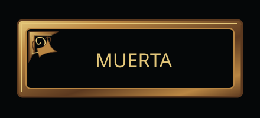
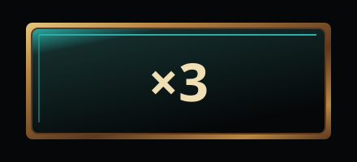
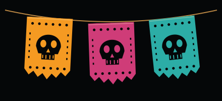
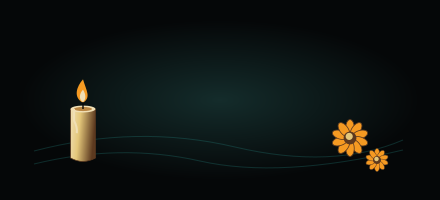

Макет
Утверждённая база этапа 1 · палитра, материалы, типографика
Свет сверху слева. Кость, чернила и состаренное золото; Barrio на индексах, Oswald на WIN / TOTAL WIN и остальном UI. Толщины 1 / 2 / 3, радиусы 4 / 8. Лампы Hand pays и исходные векторные иконки сохранены.
Ночь
#10171BБархат / FS
#142C2BЧернила / HUD
#050708Тёмный металл
#5C391FЗолото
#B98643Свет золота
#E4C77AКость / текст
#F0DFB5Маригольд
#F59A22Фуксия
#CF3C78Бирюза / эмаль
#2CADA6
Фаска золота
Эмаль
Прежний бумажный образец
БархатВыбор каждого пункта остаётся за вами. Математика, кошелёк, бонусные тайминги, HUD, Turbo/Autospin и звуки защищены проверкой хэшей. Ни публикации, ни resubmission.